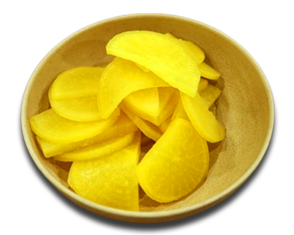
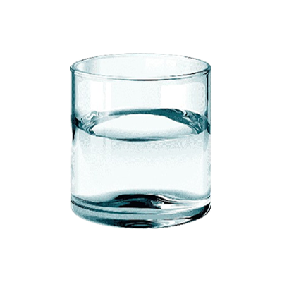
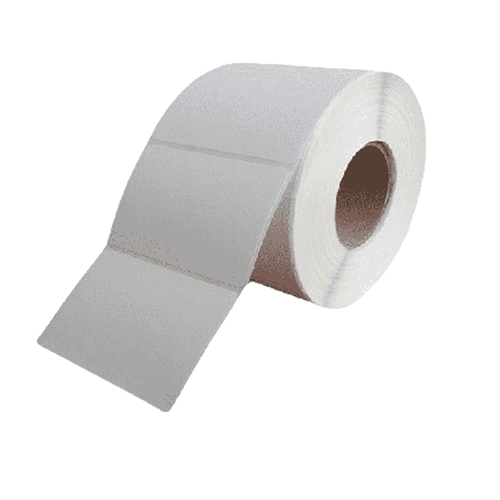
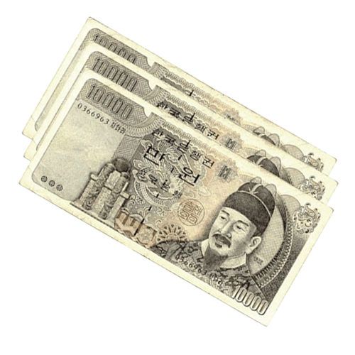

home > 사업소개 > 틈새라면
틈새문화
틈새에는 독특한 언어문화가 있습니다
-

- 파인애플? 라면집에서 파인애플을?
-
과일가게도 아니고 파인애플이 있을리야 없습니다.
노랗고 맛있는 것, 바로 단무지입니다.
틈새의 단무지는 직접 만들어 그 맛이 독특합니다.
-

- 오리방석? 오리가 앉는 방석은?
-
수수께끼 같지만 의외로 간단합니다.
바로 물, 땀 흘리며 열심히 빨계떡에 열중하다가
한잔 들이키는 시원한 물 맛입니다.
-

- 입걸레? 입걸레는 제일 쉬울겁니다.
-
바로 휴지를 가리키는 말입니다.
명동 틈새시절에 손님들과 재미로 주고받다가
만장일치로 채택된 언어라도 하는군요.
-

- 돈 뺏어라, 오만원이야
-
돈을 뺏는다? 라면을 얼마나 먹으면 오만원이 나올까?
틈새라면 한 그릇은 삼만원입니다.
물론 0 하나를 뺀 값입니다.